前提
- PC (Windows もしくは macOSで、ブラウザはChrome、もしくは Firefoxをインストールしておいてください)
- LINEのアカウント(メールアドレスとパスワードの登録をお願いします。登録手順はこちら)
- AWSアカウント (中級者向けの内容をやる場合。AWSアカウントの作成手順はこちら)
構成図
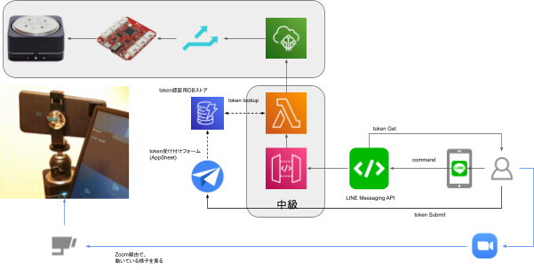
AWS Lambdaについて
今回のハンズオンでは、AWS Lambda(以下Lambda)を使ってLINE Botを作成します(初級者の方は運営が準備したBotを利用していただきます)。
AWS Lambdaについては以下の公式ページを参照してください。
https://aws.amazon.com/jp/lambda/
Lambdaにコードをデプロイする方法はいくつかありますが、今回は運営が準備したコードをAWSコンソールから貼り付けてデプロイします。
利用料金
Lambdaの利用料金は以下の公式ページをご覧ください。
https://aws.amazon.com/jp/lambda/pricing/
今回のハンズオンの内容は無料枠の中でご利用いただけます。翌月以降も費用が発生することはまずありませんが、不安な方はハンズオン終了後にリソースを削除してください。
Amazon API Gatewayについて
今回のハンズオンでは、LINE Botに対してインターネットからはAmazon API Gateway(以下API Gateway)を使ってアクセスします。
API Gatewayについて詳しくは以下の公式ページを参照ください。
https://aws.amazon.com/jp/api-gateway/
利用料金
API Gatewayの利用料金は以下の公式ページをご覧ください。
https://aws.amazon.com/jp/api-gateway/pricing/
今回のハンズオンの内容は無料枠の中でご利用いただけます。翌月以降も費用が発生することはまずありませんが、不安な方はハンズオン終了後にリソースを削除してください。
Amazon DynamoDBについて
今回のハンズオンでは、LINE Messaging APIの秘匿情報(チャネルシークレット/アクセストークン)をAmazon DynamoDB(以下DynamoDB)に保存し、チャネルIDをキーにしてLambdaから取得します。
DynamoDBならびにDynamoDBに秘匿情報を登録するためのページは運営が準備しています。
DynamoDBについては以下の公式ページをご覧ください。
https://aws.amazon.com/jp/dynamodb/
AWS IoT CoreならびにSORACOM Beamについて
今回のハンズオンでは、AWS IoT Core(以下IoT Core)ならびに「データ転送サービス SORACOM Beam」(以下、Beam)を用いてLINE Botからの命令をデバイスに届けます。
LINE BotがIoT CoreのMQTTトピックにメッセージを送信すると、Beam経由でMQTTトピックにサブスクライブしているデバイスにメッセージが届き、デバイスはそのメッセージに従って動作します。
今回はIoT CoreならびBeam、デバイスは運営で準備したものを利用します。
IoT Coreについて詳しくは以下の公式ページをご覧ください。
https://aws.amazon.com/jp/iot-core/
Beamについて詳しくは以下の公式ページをご覧ください。
https://soracom.jp/services/beam/
LINE Messaging APIについて
今回のハンズオンでは、LINE Messaging APIを使ってBotを作成し、LINEからデバイスに対して命令を送ります。
LINE Messaging APIについて詳しくは以下の公式ページを参照ください。
LINE Botのアカウント(LINE Messaging APIチャネル)を作成します。
以下の公式ドキュメントに従い、Messaging APIチャネルを作成してください。
https://developers.line.biz/ja/docs/messaging-api/getting-started/#using-console
LINE Developerコンソールで、作成したMessaging APIチャネルのチャネルID、チャネルシークレット、長期のチャネルアクセストークンを取得してメモしておいてください。
長期のチャネルアクセストークンについては以下の公式ドキュメントを参考にしてください。
チャネルシークレット等の登録
今回のハンズオンでは、LINE Messaging APIの秘匿情報(チャネルシークレット/チャネルアクセストークン)を運営が準備したDynamoDBに保存します。
DynamoDBへの登録は、運営が準備した以下のURLから行えます。先ほど保存したチャネルID、チャネルシークレット、チャネルアクセストークンを入力します。
https://www.appsheet.com/start/d8bc91a1-e3a5-4802-aaf5-d665ed747c4e
初回アクセス時には以下の画面が表示されますので、「ACCEPT」を押します。
チャネルID、チャネルシークレット、チャネルアクセストークンを入力し、「Save」を押します。
保存中は以下のように右上に赤丸の数字が表示されます。
以下のように表示されたら成功です。
Webhook URLの設定
LINE Messaging APIチャネルに、Webhook URLを設定します。これによって、チャネルととLINE Bot(Lambdaで動いているプログラム)を接続します。まずは、運営が準備しているBotと接続してみます。
Messaging APIチャネルの「Messaging API設定」タブをクリックします。
当日運営から入手したURLを設定します。URL中の「{channel_id}」の部分はあなたのMessaging APIチャネルのチャネルIDを設定します。
例えば運営から入手したURLが「https://xxxxxxxxxxxx/{channel_id} 」で、あなたのチャネルIDが「123456」の場合、設定するURLは「https://xxxxxxxxxxxx/123456」です。
Webhook URLの設定方法は以下の公式ドキュメントを参考にしてください。セキュリティの設定は不要です。
https://developers.line.biz/ja/docs/messaging-api/building-bot/#setting-webhook-url
Webhookの動作を確認します。Webhook URLの設定の下にある「検証」ボタンを押し、下図のように「成功」と表示されることを確認します。
メルプメッセージをbotが返すように設定します。
Webhookの下の「Webhookの利用」をONに(スライダーを右に)します。
その下の「LINE公式アカウント設定」の「応答メッセージ」の「編集」を押します。
LINE Official Account Managerがブラウザの別ウインドウ(タブ)で開きます。
応答モードを「Bot」、応答メッセージを「オフ」、Webhookを「オン」に変えます。
トラブルシューティング
設定がうまく進まないときにご覧ください。ここまでの作業が出来ている場合は次に進んでください。
実際に動作させてみましょう。
LINE Botと友達になる
LINE Developersコンソールの［Messaging API設定］タブにあるQRコードを読み取り、LINE Botと友達になります。
LINE Botに命令を送る
適当なメッセージをLINE Botに送る(トークルームで送信する)と、ヘルプメッセージが取得できます。
このメッセージに従い、「回転する角度(スペース)回転速度」というメッセージをBotに送ります。まずはサンプル通り「360 150」と入れてみます。ここまでの設定が正しく終わっていればzoomの画面に映っているデバイスが回転しますので、zoomの画面に注目してください。
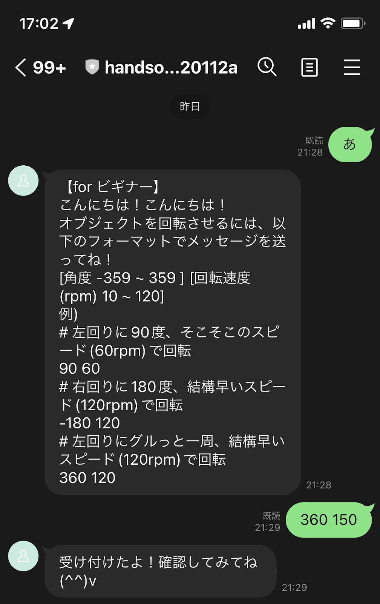
ここまでの手順では皆さんのLINE Messaging APIを運営が準備したBotに接続して動作させましたが、ここからはBotを皆さんの環境にデプロイしてみます。
デプロイするコードのダウンロード
以下のURLから、運営が準備したコード一式をダウンロードします。
https://github.com/soracomug/line-bot-device-remote-control-handson/blob/main/files/handson.zip
「ダウンロード」ボタンを押してください。
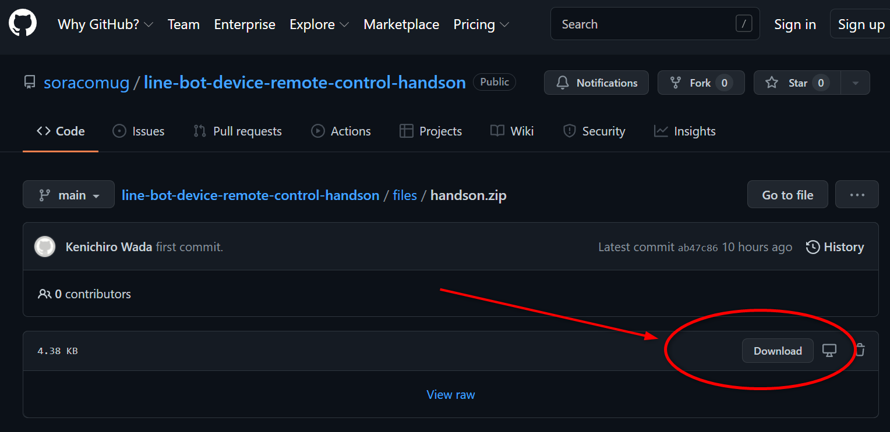
ダウンロードしたhandson.zipファイルを展開してください。以下の2つのファイルが含まれていることを確認します。
- linebot-for-handson-20220128.py
- linebot-incoming-for-handson-20220128.json
AWS LambdaにBotのプログラムをデプロイします。
まず、AWSコンソールにアクセスします。右上のリージョンが「バージニア北部」になっていない場合は、プルダウンから変更してください。
検索窓に「lambda」と入れてLambdaのコンソールにアクセスします。
「関数の作成」を押し、新しい関数を作成します。
関数のタイプで「一から作成」を選び、関数名は「soracom-linedc-handson-20220128」と入力、ランタイムは「Python3.9」を選びます。それ以外の部分はデフォルトのままで「関数の作成」を押します。
コードソースに入っているデフォルトのコードを削除し、先ほどダウンロードしたファイル「linebot-for-handson-20220128.py」の内容をそのまま貼り付けます。
そして、「Deploy」ボタンを押してコードをデプロイします。
「設定」→「環境変数」→「編集」を押し、このLambda関数の環境変数を設定します。
「環境変数の追加」を6回押し、キーと値を入力する枠を6個作ります。そこに以下のキーと値を入れて、「保存」を押します。
・ DEST_AWS_ACCESS_KEY_ID → 当日運営にお問い合わせください
・ DEST_AWS_SECRET_ACCESS_KEY → 当日運営にお問い合わせください
・ DEST_ENDPOINT_URL → 当日運営にお問い合わせください
・ DEST_REGION_NAME → 当日運営にお問い合わせください
・ LINE_CHANNEL_SECRET → あなたのMessaging APIチャネルのチャネルシークレット
・ LINE_CHANNEL_ACCESS_TOKEN → あなたのMessaging APIチャネルのチャネルアクセストークン
保存したら、次にLambdaの実行時間(タイムアウト)を変更します。「一般設定」から「編集」を押します。
デフォルトではタイムアウトが3秒になっているので、これを30秒に変更して「保存」を押します。
保存できたら、動作テストを行います。
「テスト」を押し、テストイベントの名前に「test」と入力し、JSONが記載されている部分に以下のJSONを貼り付け、「変更を保存」を押します。
{
"headers": {
"x-line-signature": "LaGMWOqhEn84qmUAlwCx6OLOTe26Y4l0chpPItEKThM="
},
"pathParameters": {
"channel_id": "9876543210"
},
"requestContext": {
"stage": "test-invoke-stage"
},
"body": "{\"events\":[{\"replyToken\":\"DUMMY\",\"message\":{\"text\":\"90 120\"}}]}"
}保存したら、「テスト」ボタンを押します。下図のように、「実行結果:成功」と出ていれば成功です。
トラブルシューティング
設定がうまく進まないときにご覧ください。ここまでの作業が出来ている場合は次に進んでください。
・コードのコピペが崩れてる、全角スペースが入ってるなどコードの問題: ファイルは文字コード UTF-8になっていますので、ファイルを開いたエディタによってはShiftJISになってしまいますと、文字化けします。エディタの設定で、UTF-8で開き直してください。
・成功したけど、想定通りの動作じゃない。: linebot-for-handson-20220128.pyの内容を貼り付けたあと、「Deploy」ボタンを押し忘れてますと、コードの変更が反映されず以下のような実行結果が表示されます。エディタ画面で「Deploy」ボタンを押してください。
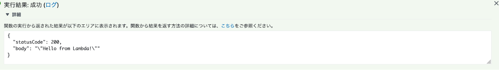
・タイムアウトエラーが出る。: タイムアウト時間が初期設定の3秒のままだと、初回起動時にタイムアウトエラーになることがあります。タイムアウト時間の変更を行ってください。
AWS Lambdaにインターネットから接続できるように、Amazon API Gatewayを使ってHTTP REST APIのエンドポイントを作成します。
まず、AWSコンソールにアクセスし、検索窓に「api」と入れてAPI Gatewayのコンソールにアクセスします。
「APIを作成」を押します。
REST APIの「インポート」を押します。
「プロトコル」は「REST」を、「新しいAPIの作成」は「Swagger あるいは Open API 3 からインポート」を選択します。
「Swagger あるいは Open API 3 からインポート」のところに、先ほどダウンロードしたファイル「linebot-incoming-for-handson-20220128.json」の内容を貼り付けます。
「エンドポイントタイプ」は「リージョン」を選びます。
全ての入力・選択が終わったら「インポート」を押します。
下図のような画面に遷移すればインポート(作成)は成功です。
「/{channnen_id}」をクリックし、「今すぐ定義」をクリックします。
「統合タイプ」で「Lambda関数」を選びます。「Lambdaプロキシ統合の使用」にチェックを入れます。「Lambdaリージョン」で先ほどLambda関数をデプロイしたus-east-1を選択します。
「Lambda関数」の入力枠をクリックするとus-east-1にデプロイされているLambda関数の一覧が選べるので、「soracom-linedc-handson-20220128」を選びます。
全ての選択と入力が終わったら「保存」を押します。
以下の警告が出るので、「OK」を押します。
以下のような画面になれば成功です。
「アクション」のプルダウンから「APIのデプロイ」を選択します。
「デプロイされるステージ」で「[新しいステージ]」を選び、「ステージ名」に「prod」と入れ、「デプロイ」を押します。
下図のようになったら成功です。「URLの呼び出し」の所にあるURLがMessaging APIチャネルに設定するエンドポイントになりますので、これをコピーします。
コピーしたURLの後ろにあなたのMessaging APIチャネルのチャネルIDをつけ、Messaging APIチャネルの設定でWebhook URLに登録して動作確認を行ってください。
トラブルシューティング
設定がうまく進まないときにご覧ください。ここまでの作業が出来ている場合は次に進んでください。
・インポートできない場合 : 指定したファイルが誤っていないか確認をお願いします。
・Lambda関数が出てこない : API GatewayがあるリージョンとLambdaのリージョンが異なっている場合、Lambda関数が出てきません。同一のリージョンで作業するようにしてください。
放置しておいても、課金が発生することはありませんが、後片付けを行います。
LINE Messaging APIチャネルの削除(全員)
LINE Developerコンソールで、作成したプロバイダーの「Action」をクリックします。
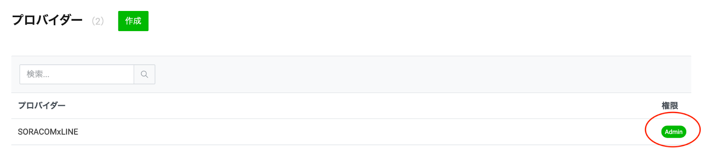
作成したチャネルをクリックします
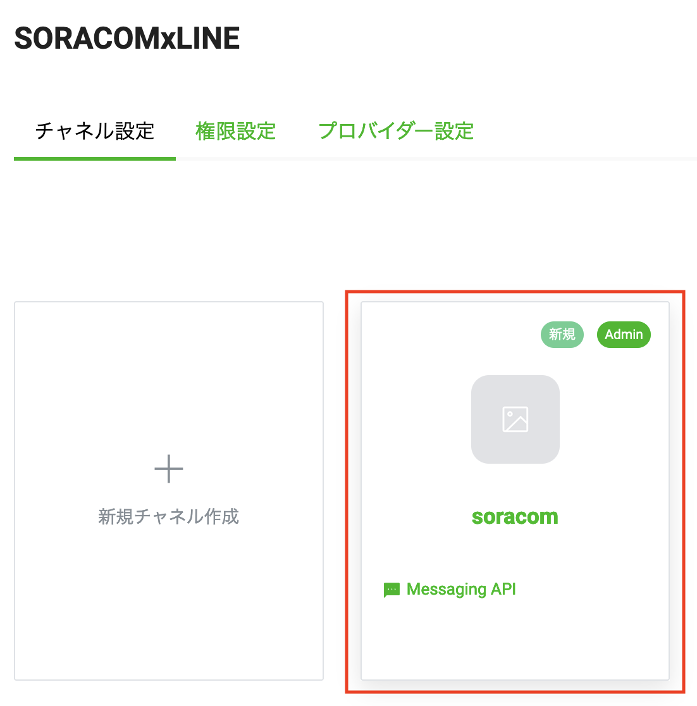
チャネル画面下部の「削除」をクリックします。
ダイアログで「LINE Official Account Managerを表示」をクリックします。
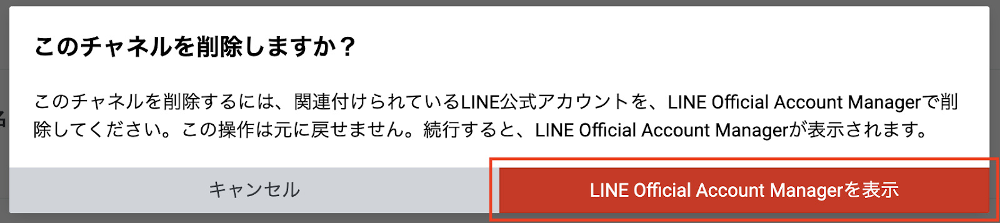
遷移した画面で、「上記の注意事項を理解して、アカウントの削除に同意します」のチェックボックスにチェックを入れ、「アカウントを削除」をクリックします。
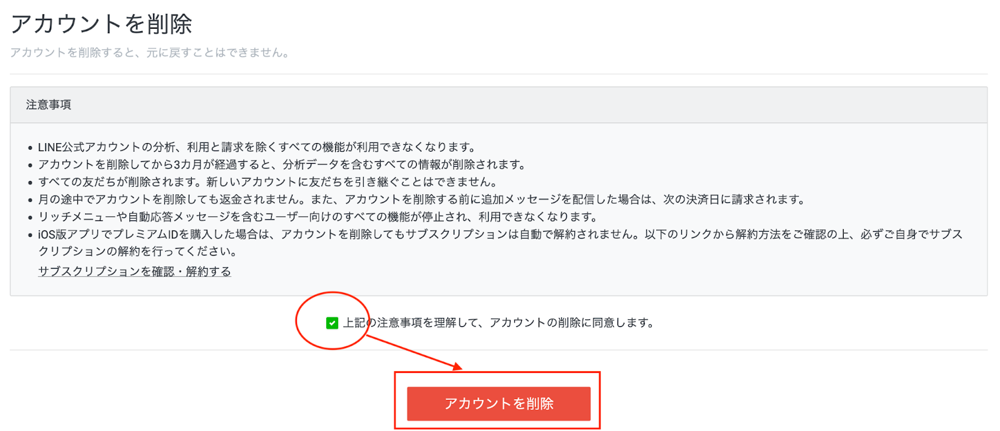
ダイアログで「削除」をクリックします。
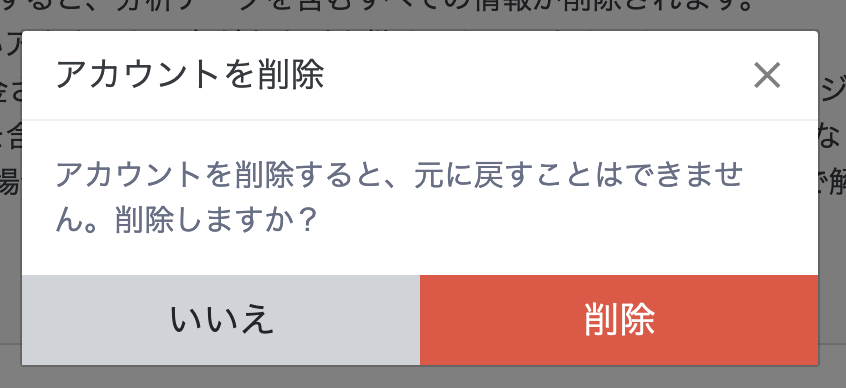
チャネル一覧に何も表示されなくなるまで、上記の作業を繰り返します。
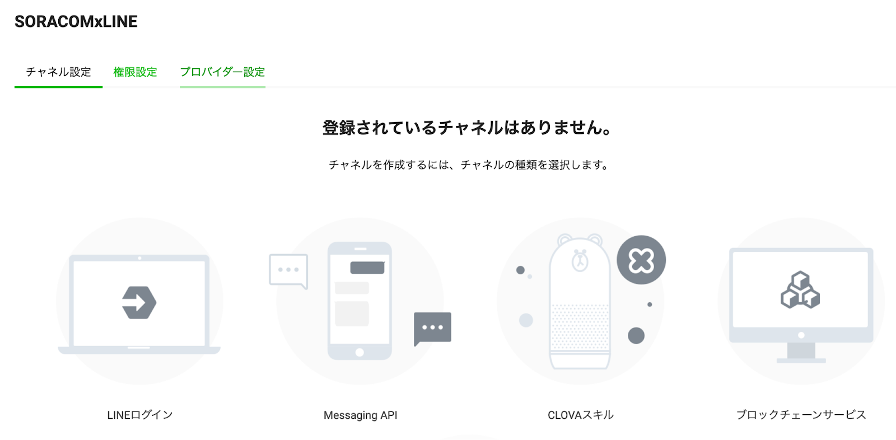
プロバイダー設定タブを選んで、下部のプロバイダーの削除にある「削除」をクリックします。
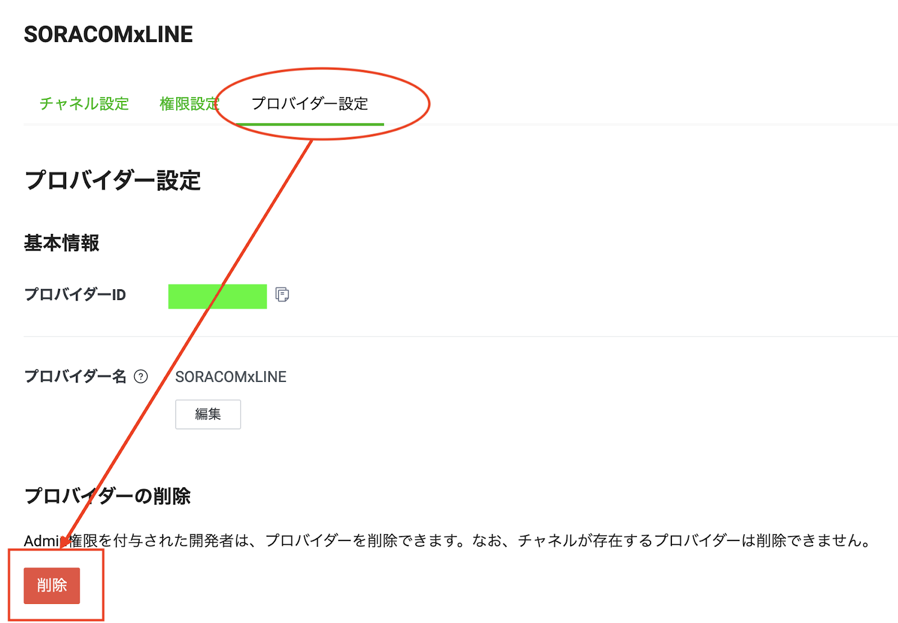
ダイアログで、プロバイダーIDを入力し、「上記に同意し、このプロバイダーの永久削除を希望します。」のチェックボックスにチェックを入れて、「削除」をクリックします。
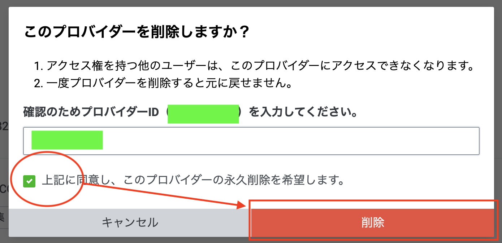
以上で、プロバイダーの削除は完了です。
AWS Lambda関数の削除(中級をやった方)
Lambdaのコンソール画面で、「soracom-linedc-handson-20220128」のチェックボックスにチェックを入れて、右上の「アクション」プルダウン内の「削除」をクリックします。
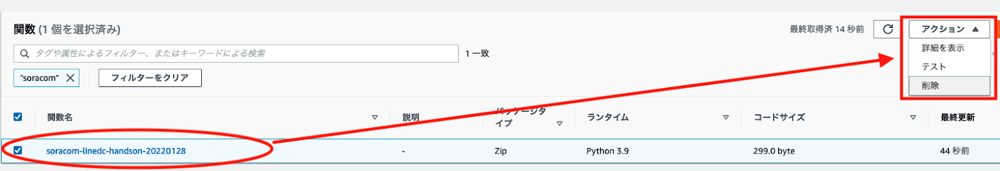
ダイアログで、関数を確認の上、「削除」をクリックします。

Amazon API Gatewayの削除(中級をやった方)
API Gatewayのコンソールにて、「linebot-incoming-for-handson-20220128」のラジオボタンを選択し、右上の「アクション」プルダウン内の「Delete」をクリックします。
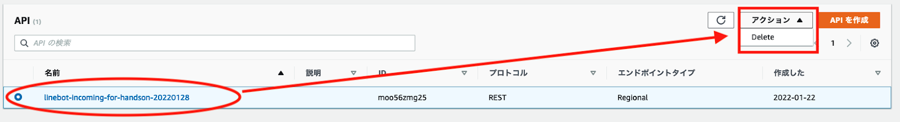
ダイアログでAPI名が確認の上、「削除」をクリックします。
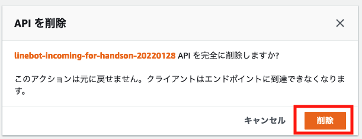
ここまでで、ハンズオンは終了です。お疲れ様でした！
wioで動いてるスケッチあるので、IoT CoreとBeam設定したらwioやarduinoなどで動かせる。ただし回転させるのはデバイスが高いのでそこをLチカあたりに書き換えてその手順を掲載する？
(時間があれば。なければappendix自体を削除)
解説: IoT Core 側の設定
IoT Core
SORACOM Beam
デバイス
解説: 本格的な利用に向けて
トークンチェック → オーソライザ―へ